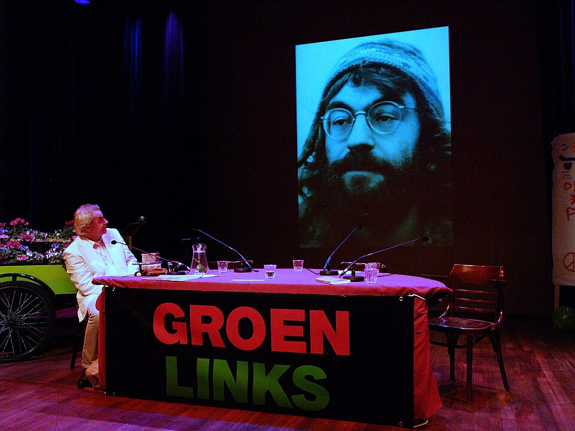

Over Roel

Roel van Duijn werd in 1943 in Den Haag geboren. Hij richtte in 1965 Provo mee op en in 1970 de Kabouters, en zette zich daarna in voor groene politiek, in Amsterdam en in Europa. Hij schreef een groot aantal boeken over politiek en geschiedenis. Hij woont in Zutphen.
De meest complete biografie over Roel
Roel van Duijn, een ziener in Nederland
In de pers
Interviews, recensies en een podcast over Roel en zijn boeken.